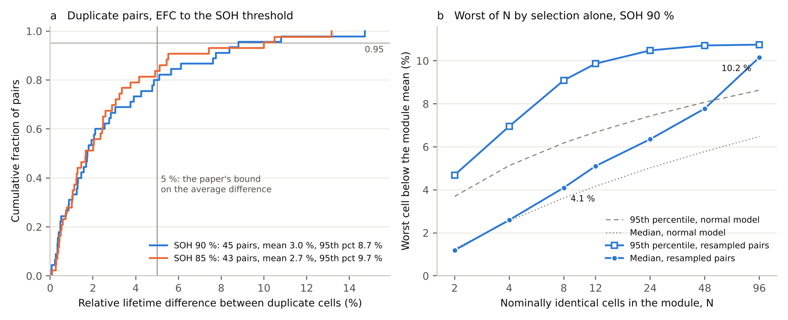
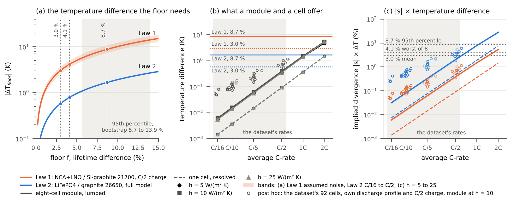
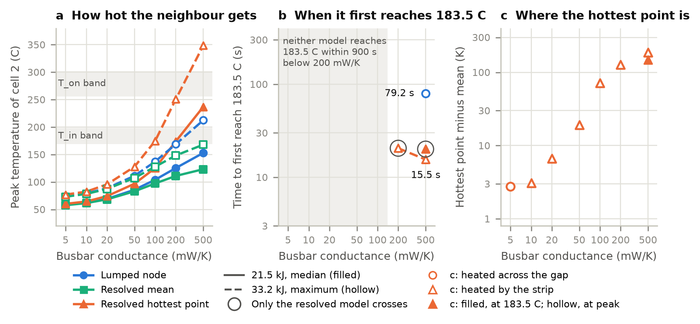
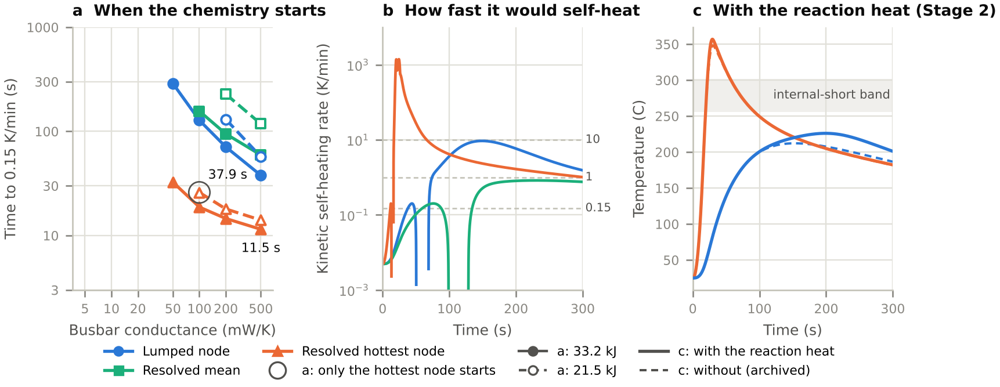
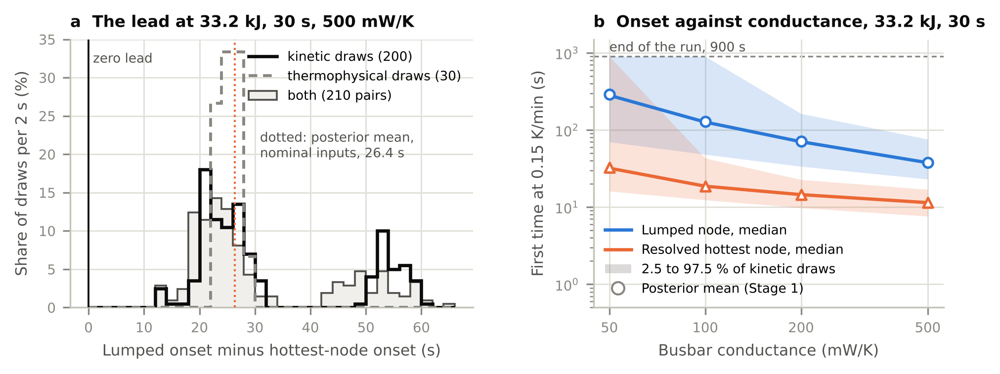
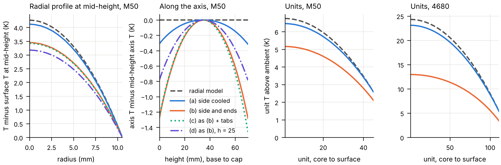

Most thermal and lifetime models of electrochemical energy systems rest on an aggregate: a cell as a uniform heat source, a stack as its mean cell voltage. My work measures what the aggregate costs: how large the error is, what sets it, and how to carry it to a decision rather than assume it away. Two sole-authored manuscripts are submitted for publication; five short pre-registered studies extend them toward one question, how much of the cell-to-cell lifetime divergence in a battery module is thermal in origin. For every study the predictions were committed in a public repository before any analysis, the failed predictions are reported beside the held ones, and the code, results and a one-page note are archived with a DOI.
Manuscripts submitted for publication
Current collection and event duration set the error of uniform heat-generation models of base-cooled prismatic lithium-ion cells
A virtual 70 Ah base-cooled prismatic NMC cell built from published parameters: an electrochemical heat source distributed over the foils, tab strips and foil-to-terminal joints by a current-collector solve, and a conduction solver verified against three independent codes. Against a uniform source of equal heat across seven current-collection designs and six event durations, the uniform source underestimates the steady peak surface temperature by 0.06 K for a welded roll and by up to 5.9 K for the narrowest tabs, and misplaces the hot spot. The relative error is largest in short pulses, the error in kelvin largest in sustained operation; each watt in the joints adds 0.85 to 1.3 K; a drained terminal path reverses the sign; widening 20 mm tabs to 40 mm beats cooling the large face for events shorter than about 190 s at 2C.
Worst-cell degradation and stack-mean life projections in PEM fuel cell stacks: the IEEE PHM 2014 benchmark and a test on a heavy-duty stack
Fuel cell stack life is projected from the stack voltage although stacks are monitored cell by cell. Each cell of the benchmark's two five-cell stacks is analysed against a resampling null for the winner's curse, since the fastest of five noisy cells is fast partly by selection: the worst cell lost voltage 16.7 and 21.4 % faster than the stack mean, against 7.5 and 20.0 % from selection alone. Nineteen rate estimators place the two stacks' rate ratio between 0.91 and 1.94, so the estimator alone decides which stack appears to degrade faster. Predictions were written down before opening another laboratory's ten-cell heavy-duty stack; the excess appeared, but not at the predicted size, and the paper reports that.
Five pre-registered studies
Each study was registered by a public commit of its predictions before the analysis was run; the commit hash is recorded in the repository. The one-page note in each repository's note/ folder is the shortest complete account.
1. The cell-to-cell lifetime floor in a public dynamic-cycling dataset
The 45 duplicate-cell pairs of the dataset of Geslin et al. (2025) measure how far two identical cells under one protocol at 35 °C drift apart with no thermal cause in play. The duplicate lifetime difference at 90 % state of health averages 3.0 % with a 95th percentile of 8.7 %, the within-pair share of the lifetime variance is 3.0 %, and selection alone puts the worst of eight identical cells 4.1 % below the module mean. Any thermal account of divergence in a module has to clear this floor first.
Predictions: nine of nine held.

Left: cumulative distribution of the duplicate-pair lifetime difference at 90 % and 85 % state of health, with the paper's 5 % bound on the average. Right: the worst of N identical cells below the module mean by selection alone, median and 95th percentile, from resampled pairs and from a normal model.
What steady temperature difference would a thermal explanation need, and what does a module offer? Under a published Arrhenius-type ageing law two cells at 35 °C need 1.68 K between them to differ in lifetime by the 95th-percentile floor and 0.58 K for the mean, while an eight-cell 21700 module in 35 °C air at the dataset's rates offers at most 0.39 K between cells, and first offers 1.68 K at 2C. The closest published law for the dataset's own chemistry peaks near 35 °C, so its lever there is weak and of undetermined sign. The conclusion is a measurement, not a model: the dataset cell's own cycle life against temperature near 35 °C is the first thing the thesis needs, and the floor fixes how many cells that test takes.
Predictions: P2, P3 held; P1, P4, P5 failed, as the registered file anticipated.

Left: the temperature difference each floor value needs under Law 1 (NCA+LNO / Si-graphite 21700) and Law 2 (LiFePO4 / graphite 26650). Middle: what an eight-cell lumped module and one resolved cell offer against average C-rate at three film coefficients, with the dataset's rates shaded. Right: the implied divergence against the 3.0, 4.1 and 8.7 % lines, with the dataset's 92 cells post hoc.
3. The neighbour of a failing cell: one temperature against a resolved field
Two LG M50 cells, one failing with the heat release of the Battery Failure Databank, the neighbour solved twice with identical inputs: as a single temperature, as pack models treat it, and as a resolved three-dimensional field. Where the lumped neighbour reaches the self-heating temperature at all, the resolved hottest point reaches it about a minute earlier, and the resolved mean never does. The addendum asks which path the heat takes and whether a homogenised pack model applies: the busbars carry 86 to 90 % of the neighbour's intake at 500 mW/K and 58 to 66 % at 50 mW/K; in the applicability measure of a published hybrid pack model the lumped error against the resolved mean passes 0.05 only after the hottest node has reached 183.5 °C; and a two-by-four busbar-connected module in air has a packing Biot number of 46 and a conductivity ratio of 43, outside that model's conditions before any cell burns.
Predictions: v1.0.0 four of five held; addendum one held, one in part, two failed.

Against busbar conductance, at the median (21.5 kJ) and maximum (33.2 kJ) heat release: how hot the neighbour gets as a lumped node, as the resolved mean and at the resolved hottest point; when each first reaches 183.5 °C; and how far the hottest point sits above the mean.
4. Onset kinetics on that resolved neighbour, with a published Bayesian kinetic model
The published B-CRNN thermal-runaway kinetics of Koenig, Zhao and Deng (2025) integrated along the archived neighbour histories and then fed back as a heat source. With copper busbars the resolved hottest node starts to self-heat 23 to 26 s before the lumped node, every start a fresh SEI decomposing at 108 °C; the lumped model never enters the internal-short band yet releases six to seven times the resolved cell's reaction heat. The third stage carries the uncertainty: over 200 joint draws of the kinetic posterior and 30 Latin hypercube draws of the roll's published thermal properties, the lumped node never starts first in any of the 42 cases, the lead at the busbar runs from 15 to 59 s with a median of 26 s, and the kinetics, not the thermal properties, set both onsets (thermal-to-kinetic standard-deviation ratio 0.027 at the hottest node, 0.106 at the lumped node). A check against the source's published onset temperature failed the registered acceptance band and passes an amended one; both verdicts are recorded.
Predictions: stages 1 and 2 six held, one failed; stage 3 P1, P2, P5 held, P3, P4, P6 failed.

Posterior-mean kinetics: when the chemistry starts at the lumped node, the resolved mean and the resolved hottest node against busbar conductance; how fast each would self-heat; and, with the reaction heat fed back (stage 2), the hottest node entering the internal-short band while the lumped node does not.

Stage 3: the lead of the hottest node over the lumped node across 200 kinetic posterior draws and 30 thermophysical draws (no draw reaches zero), and the onset against busbar conductance with the central 95 % band of the kinetic draws.
5. The thermal field a multi-unit cell model assumes
A published multi-unit model of the LG M50 resolves the electrode stacks inside one cell at their own temperatures and rests on a one-dimensional radial thermal model. That submodel is tested here against the resolved three-dimensional cell at the paper's own conditions. With the ends insulated the radial model holds within 0.29 K in the M50 and 1.2 K in a 4680. With the ends cooled at h = 400 W/(m² K) it misses an axial difference equal to 37 % of the radial one in the M50 (1.28 of 3.45 K) and 32 % in the 4680, the per-unit offset averages 1.19 K and 7.96 K, the unit-to-unit spread is overstated by 36 and 98 %, and the cooled ends remove 19 and 38 % of the heat.
Predictions: P1, P2, P4 held; P3, P5 failed.

The radial model against the resolved cell: the radial profile at mid-height and the profile along the axis in the M50, and the temperature of each unit from core to surface in the M50 and the 4680, with the side cooled, the side and ends cooled, with tabs added, and with h = 25 W/(m² K).
How the work is done
Predictions are committed to the public repository before the analysis runs; the commit hash is recorded in the note.
Failed predictions are reported with the held ones, with the reason where it is known.
Every number in a note or manuscript traces to a script and an archived result file.
Solvers are verified against independent codes before they are used.